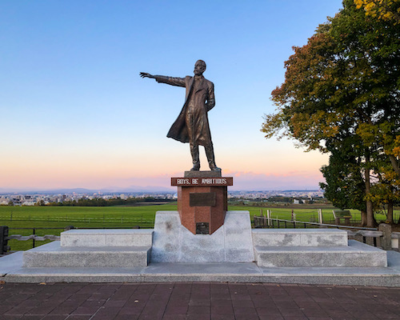

私の旅行の仕方
- 行く土地を決めて、その中で行きたいスポットを決める。そしてそのスポットをGoogleマップにピンを打ち込む。
- そのスポットが離れている場合は日数ごとに分けて、巡るルートを決める。食事は現地で調べることが多い。ここまで決めてしまうとかなり縛られた旅行になってしまう。
- アクセスの良い宿を取る。全てのネットエージェントを見て最安値を見つける。比較サイトは漏れがあるので使わない。
- その土地までの交通手段は基本バス。これが最安値。
北海道

札幌
巨大でとても綺麗な街でした。計画的に作れられた街であることがよくわかります。近い範囲に見どころがたくさんあります。
小樽
札幌から一番近い地域です。かつて金融で栄え、立派な歴史的建築物を見ることができます。こちらも計画的につくられた綺麗な街です。

羊ヶ丘展望台
道内は車で移動するべきです。バスと電車を使いましたが、ここにいくだけで３時間かかりました。
クラーク像の後ろには広大な草原が広がり、北海道の自然を感じることができます。今回は北海道の都市を巡ったので次は時間をたっぷりととって大自然を訪れたいです。